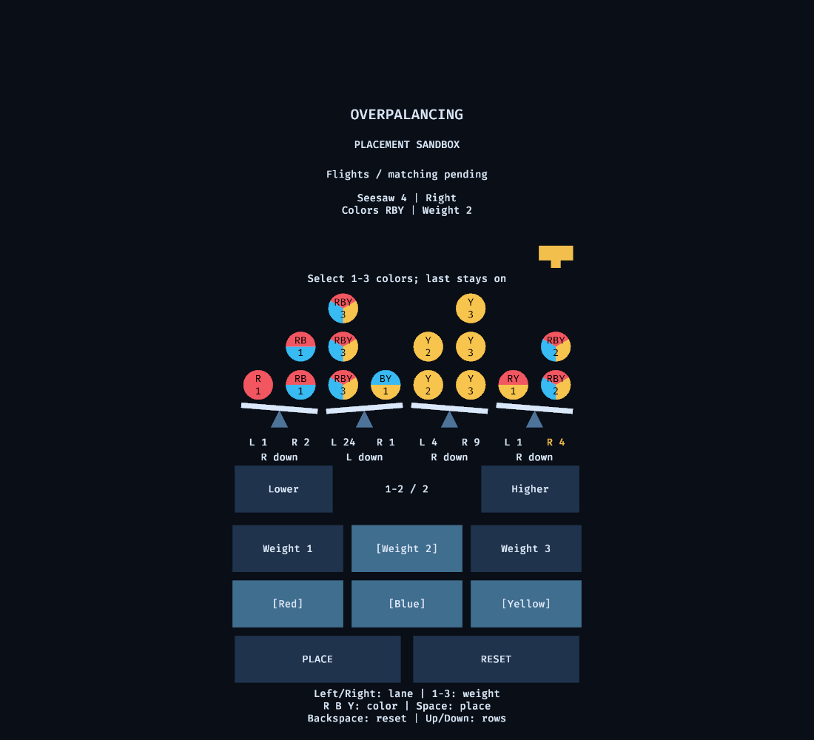
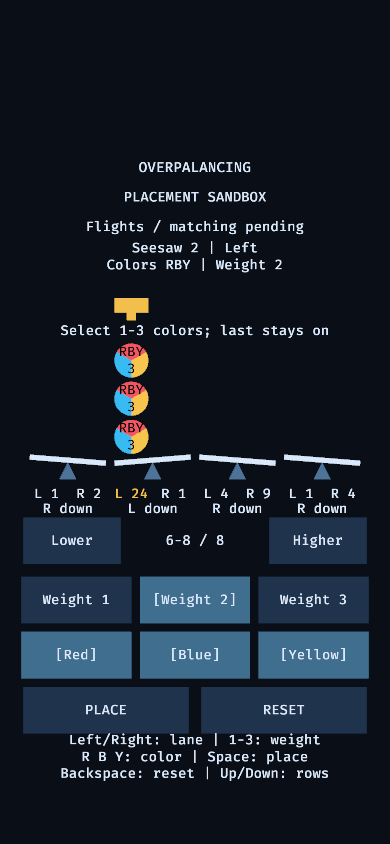

Multicolor sandbox
This extension to the fixed-stack placement sandbox adds balls containing one, two or three colors. The base feature in PR #5 used single-color presets; this extension changes color selection into independent toggles. Stack selection, weight, explicit placement, reset and tall-stack inspection retain their existing controls.
Select colors
Press R, B or Y, or activate the Red, Blue or Yellow control, to toggle that color. Selected controls have an additional textual marker, so selection does not rely on color alone. At least one color remains selected: toggling the sole remaining color leaves it on. Every nonempty combination of red, blue and yellow can be configured.
Choose a weight independently, check the selected colors and target, then activate Place. Existing balls keep the colors and weight they had when placed. For example, placing R+B and then enabling Y produces a new R+B+Y ball without changing the earlier ball.
Read multicolor balls
A single color fills the ball. Two colors occupy two halves; three colors occupy three sectors. A separate text cue identifies all colors with R, B and Y letters, with the numeric weight on its own line. Colors do not divide or multiply the ball's weight.
Scope
This feature represents multicolor balls; it does not define how jokers match. Shared-color clearing, compression, launches, scoring and dispenser sequencing remain unresolved or deferred. No extra dependency or art asset is required.
Verification status
On 2026-10-19, the UX engineer inspected filled Linux landscape and 390-pixel portrait renders plus a pointer-placement render. Visual review passed: two-color halves and three-color sectors are distinct, color letters and the separate numeric weight are readable, all four seesaws and controls remain visible, and selected toggles have redundant textual markers. No overlap was observed at these inspected sizes. The lead separately reports successful X11 color-toggle and mixed-placement checks, all eight stack targets, tall-row inspection, reset, mouse toggling and placement, and live resizing to 390 pixels. The lead also reports 12 passing tests, Clippy and rustdoc checks. These results do not establish physical phone touch or Android/iOS runtime compatibility. Device execution and customer feature acceptance remain pending.
See the proposal and acceptance scenarios.
Rendered evidence

